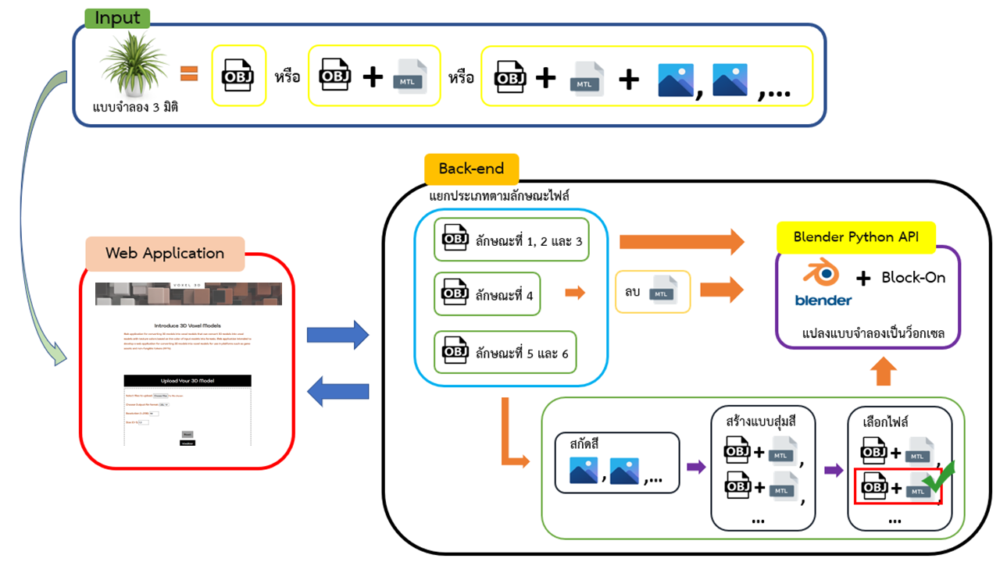

Web Application Development for
Converting 3D Models into Voxel Models

Example Results: WebApp(Voxel 3D)
Abstract

3D models are now becoming more active in many industries, including the
construction
industry. Entertainment Industry In movies, anime, and online games, 3D models are used for
aesthetic purposes. Voxel models can also be beautiful and dimensional, but voxel modeling
has time constraints in terms of creating beautiful models because it takes quite a bit more
time to build each beautiful model.
The developer then proposed a web application for converting 3D models into
voxel models that can convert 3D models into voxel models with texture colors based on the
color of input models into formats. Web application intended to develop a web application
for converting 3D models into voxel models for use in platforms such as game assets and
non-fungible tokens (NFTs).
The benefit of developing this web application is that it has a voxel model with the same
texture color as the color of the input model, which can be used in various platforms such
as game assets and non-fungible tokens (NFT).
Project poster
The website template was borrowed from Michaël Gharbi.